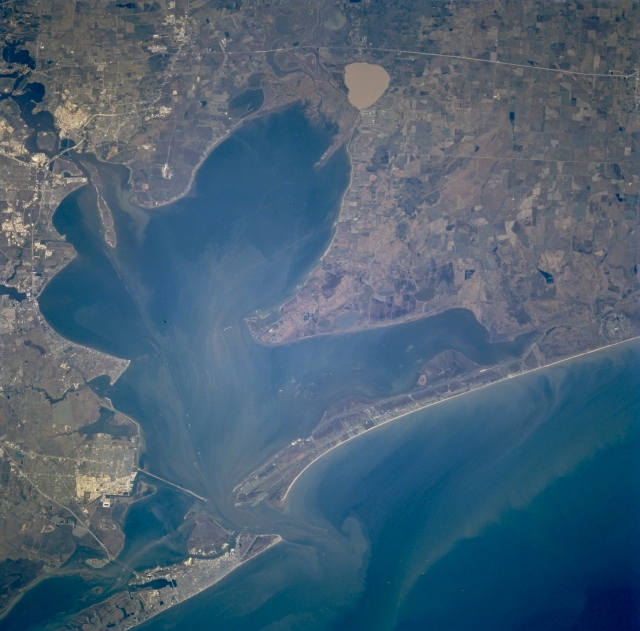
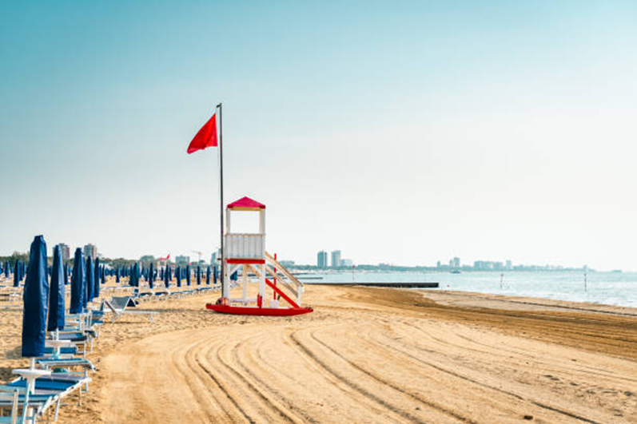

Ontdek Lagoon
Activiteiten
Van historische stadswandelingen in Venetië tot zonnige stranden in Galveston Bay vind de perfecte activiteit voor jouw reis.
City Trips Verkennen
Duik in de cultuur en culinaire wereld van twee iconische lagunegebieden.




Must Do
Mis deze ervaringen niet de absolute hoogtepunten van elke bestemming.


Stranden
Van rustieke Adriatische kuststroken tot brede Golf-stranden hier zijn de mooiste plekken om te ontspannen.

Venetiaanse Stranden
De stranden rondom de Venetiaanse lagune zijn uniek door hun ligging: fijn zand, rustig water en spectaculair uitzicht op de eilanden. Het Lido di Venezia, bereikbaar per vaporetto, is het bekendst een lang strandboulevard met stijlvolle badcabines. Pellestrina biedt een meer authentieke Italiaanse strandbeleving, weg van de toeristische drukte.
Galveston Bay Stranden
Galveston biedt ruim 50 km aan stranden langs de Golf van Mexico. Stewart Beach is ideaal voor families, terwijl East Beach bekendstaat om zijn festivals en muziekevenementen. Het warme Golfwater maakt Galveston een populaire bestemming voor surfers en watersporten. De Bolivar Peninsula, bereikbaar per veerboot, is rustiger en biedt prachtige natuur.
Natuur Plekken
Ontdek de adembenemende natuur van de lagune-ecosystemen van rietvelden tot mangrovebossen.

Kids Activiteiten
Avontuur voor de kleintjes de beste kinderactiviteiten in beide lagunegebieden op de kaart.